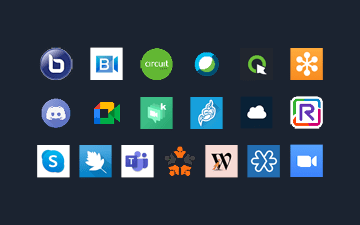

Article
Quelle application mobile de visioconférence pour réduire votre impact ? Édition 2021
L'objectif de ces mesures est de voir comment les apps se situent en termes d'impact environnemental (Carbone) à partir de scénarios utilisateurs courants.
Lire l'article